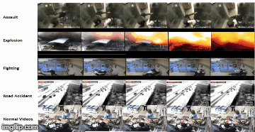

Toggle navigation
Home
Instructor
Students
Research
Project
Publications
Contact Us
Anomaly Detection and Analysis

Description
The proposed system removes the onus of detecting aberrance situations from the manual operator; and rather, places it on the video surveillance system.
Related Publication
1.
Kuldeep Biradar, Sachin Dube, Santosh Kumar Vipparthi,
“DEAREST: Deep Convolutional Aberrant Behaviour Detection in Real world Scenario,”
13th international conference on industrial and information system, 2018.
2.
Kuldeep Marotirao Biradar, Ayushi Gupta, Murari Mandal, Santosh Kumar Vipparthi,
"Challenges in Time-Stamp Aware Anomaly Detection in Traffic Videos In CVPR Workshops"
,2019